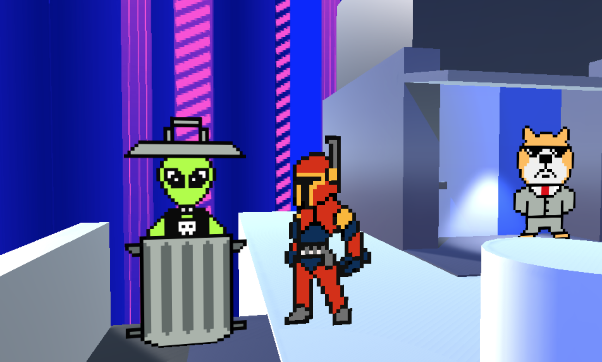
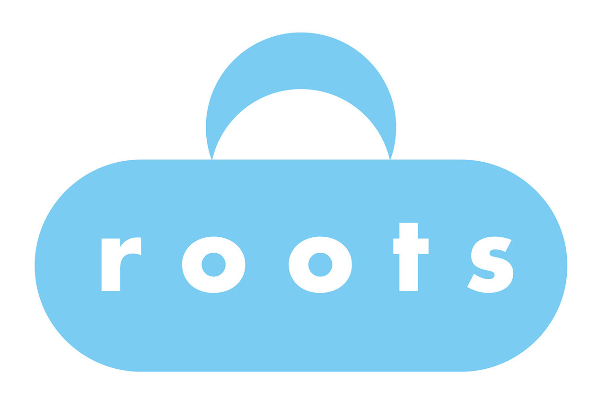
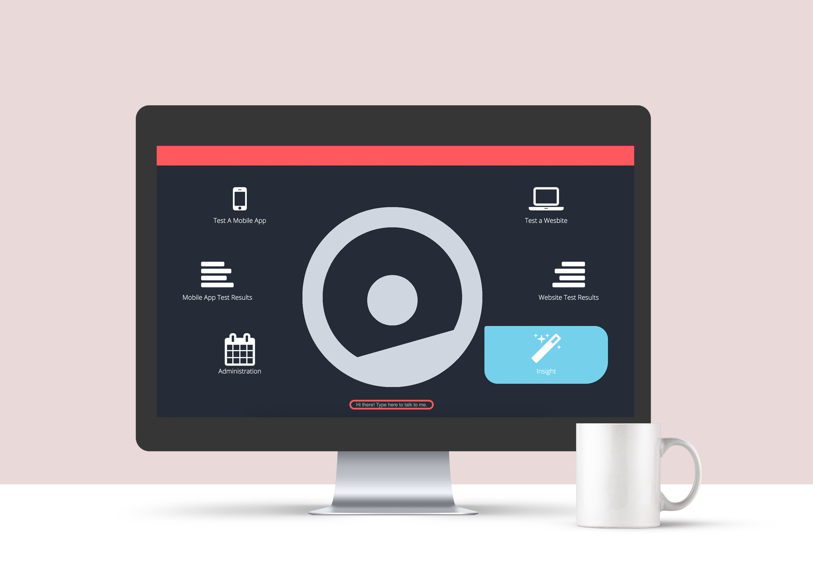

Acuity is a multi-platform interface that analyzes a user's blood sugar and personalized dietary
preferences to reccomend foods available to the user. Based on the amount of insulin they have,
users can ration, exercise, and eat safely - or they can opt to sell their data as a means to
purchase insulin.
Since the root cause is lack of access to insulin, my team and I
explored wearable technology that suggests food based on what the user can control:
how they eat, exercise, and manage data.
Project Red is a solo RPG adventure game built around the themes of retro
futurism and exploration. The game takes inspiration from some of the most
influential and revolutionary video games and movies from the past 50 years,
such as Paper Mario, Star Wars, and Space Quest.
Built in Unity,
this story-driven text adventure features pixel art characters,
dialogue, and unexpected easter eggs. You can play
here.

I co-developed this game for iOS devices using Objective-C on Xcode and worked on collision
detecttion and transisions. Compost, Recycle, Landfil - or CORELA for short - teaches proper disposal to eliminate
hesitation and misplaced trash amongst teens and young adults who have not learned sorting
etiquette in a way that is engaging and does not penalize people for wanting to learn.
GenderVender is on a mission is to raise awareness on supporting local businesses run
by women in the greater Seattle area, sparking dialogue on gender inequality, and enabling change.
We’re a vending machine pop-up that partners with local women-run business owners in the Greater
Seattle Area. Through our partnership, we showcase our partner's founding story and have their
products for sale to the public. Visit out website
here.
Working backwards, I started by thinking about the needs of youth seeking
temporary solace in the ROOTS Young Adult Shelter. By doing so, I identified the need for
a safe get-away for the night - designing a duffle bag logo strapped by a cresent
moon for the night. This led to my redesign of the Rising Out of the Shadows young adult
shelter for homeless youth. Want to donate?

Sofy is a platform to test applications and websites with real devices with seamless
movement between manual and automated testing even when working remotely I challenged
the way data is presented to engineers using the device current design
and explored a completely new approach to data presentation.
By reimagining the platform as a virtual assistant rather than a testing bot,
I explored how to present data. The intent: build an efficient system to prioritize
the information teams need.
